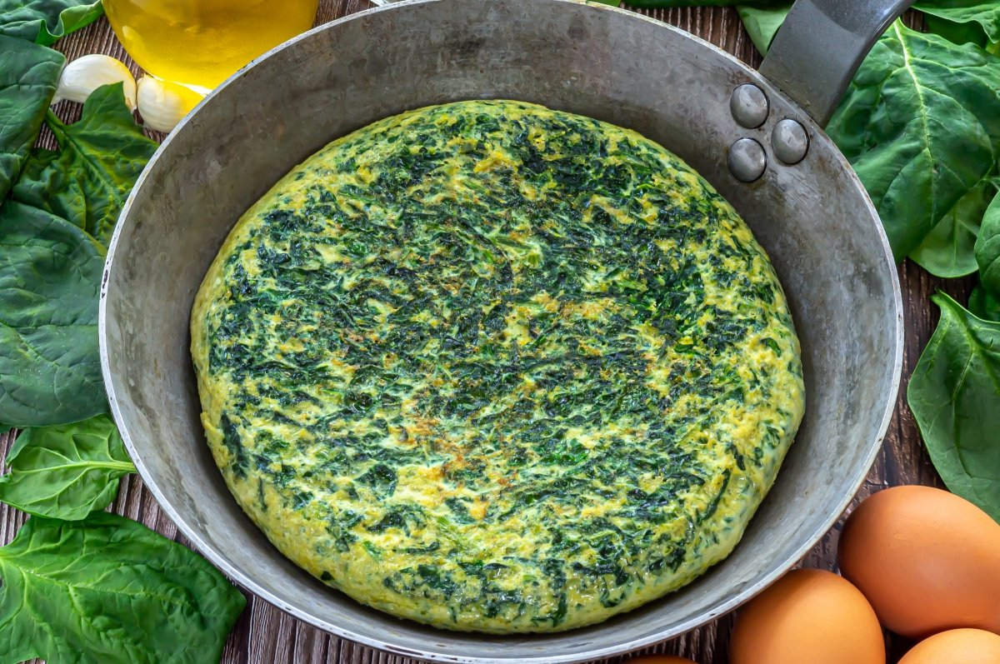
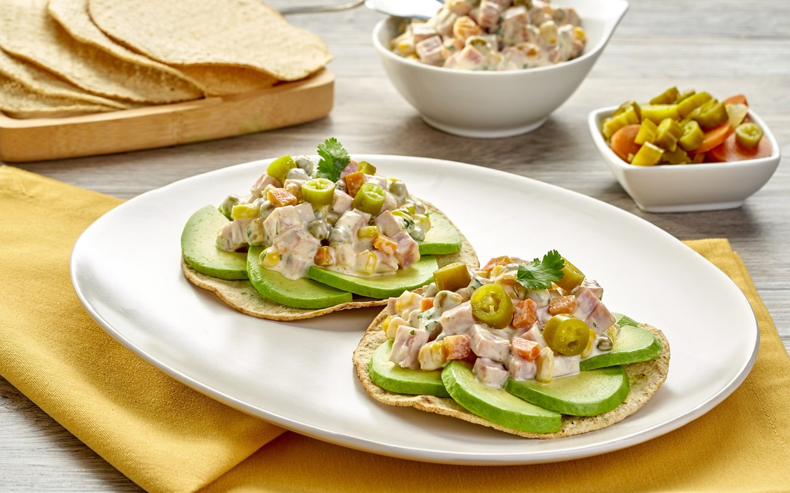
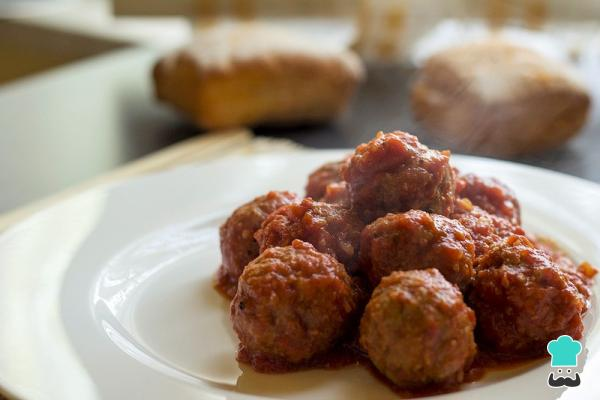
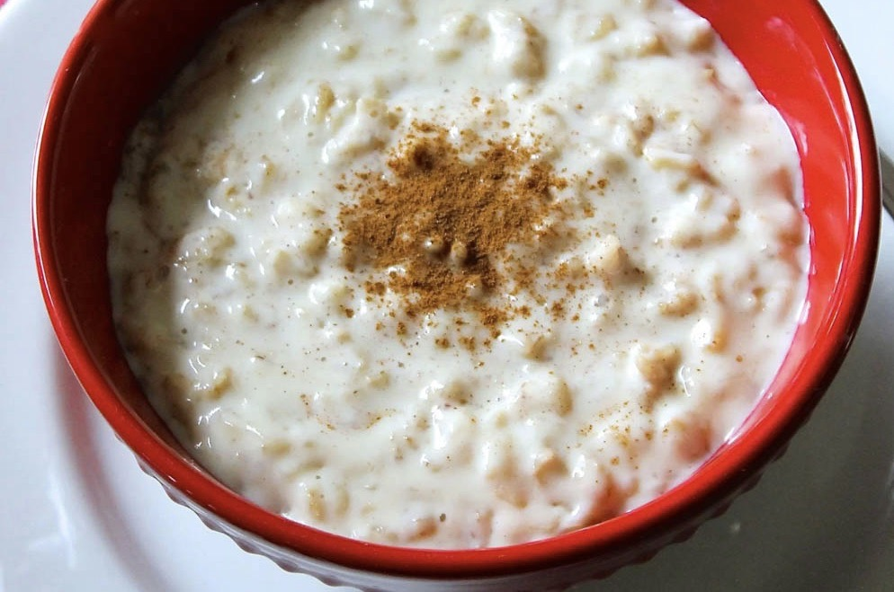
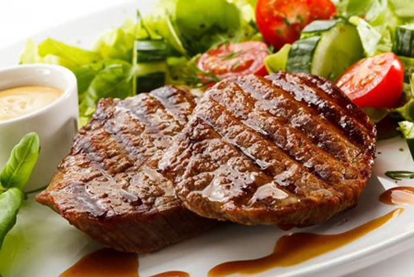

Esta es una dieta que hicimos especialmente para ti, esperamos que
esto te ayude!!
Día 1
Desayuno: 1 taza de avena cocida con leche
descremada, 1 cucharada de semillas de chía, 1 manzana en
trozos.
Colación: 1 puñado de almendras (15 unidades).
Almuerzo: Pechuga de pollo a la plancha,
ensalada de espinaca, aguacate, tomate y zanahoria rallada
(aderezada con aceite de oliva y limón), 1 rebanada de pan
integral.
Colación: Yogur natural sin azúcar con 1
cucharadita de miel.
Cena: Tortilla de espinaca y champiñones con
queso bajo en grasa, ensalada de lechuga y pepino.

Día 2
Desayuno: 2 tostadas integrales con aguacate y
huevo poché, 1 taza de café o té sin azúcar.
Colación: 1 pera.
Almuerzo: Filete de pescado blanco al vapor,
arroz integral, brócoli y zanahorias salteados.
Colación: 1 puñado de nueces (10 unidades).
Cena: Sopa de lentejas, ensalada de rúcula,
tomate cherry y queso panela.

Día 3
Desayuno: Smoothie de frutos rojos (arándanos,
fresas, yogur natural y agua). 1 rebanada de pan integral con
crema de cacahuate.
Colación: 1 mandarina.
Almuerzo: Albóndigas de res magra en salsa de
jitomate, puré de papa, espinacas al vapor.
Colación: 1 puñado de pistaches sin sal.
Cena: Pechuga de pavo a la plancha, ensalada de
lechuga, zanahoria y pepino.

Día 4
Desayuno: 1 bol de yogur natural con granola,
fresas y miel, 1 vaso de jugo de naranja natural.
Colación: 1 plátano.
Almuerzo: Salmón al horno con limón y hierbas,
quinoa cocida, calabacitas asadas.
Colación: 1 barra de granola casera.
Cena: Omelette de claras con espárragos y
champiñones, 2 tostadas horneadas de maíz.
Día 5
Desayuno: 1 taza de avena cocida con leche
vegetal, manzana en rodajas y canela, té verde.
Colación: 1 puñado de cacahuates naturales.
Almuerzo: Pollo en tiras salteado con pimientos
y cebolla, arroz integral, brócoli al vapor.
Colación: 1 yogur griego natural con arándanos
deshidratados.
Cena: Ensalada de atún con aguacate, jitomate y
espinaca, 1 rebanada de pan integral.

Día 6
Desayuno: Smoothie de plátano, espinaca y leche
de almendra, 1 rebanada de pan integral con queso fresco.
Colación: 1 kiwi.
Almuerzo: Filete de res a la plancha, ensalada
de papa, zanahoria y chícharos, 1 tortilla de maíz.
Colación: 1 puñado de semillas mixtas.
Cena: Sopa de verduras (calabaza, zanahoria,
apio), 1 tostada integral con frijoles.

Día 7
Desayuno: 2 hot cakes de avena y plátano (sin
azúcar), 1 cucharada de miel, 1 vaso de leche descremada o
vegetal.
Colación: 1 puñado de almendras.
Almuerzo: Pechuga de pollo al horno, ensalada
de quinoa, tomate, pepino y aguacate, 1 rebanada de pan
integral.
Colación: 1 yogur natural con frutas frescas.
Cena: Tortilla de huevo con espinaca, ensalada
de lechuga y tomate.